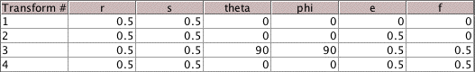

IFS and Addresses
Exercise 3
3. Suppose T
3
is changed so the table becomes

Shade the region with address 312.
312
Comapre this region with the problem 2 region having address 312. Comment on the differences.
Here is the
answer
.
Return to
Address Lab Exercises
.